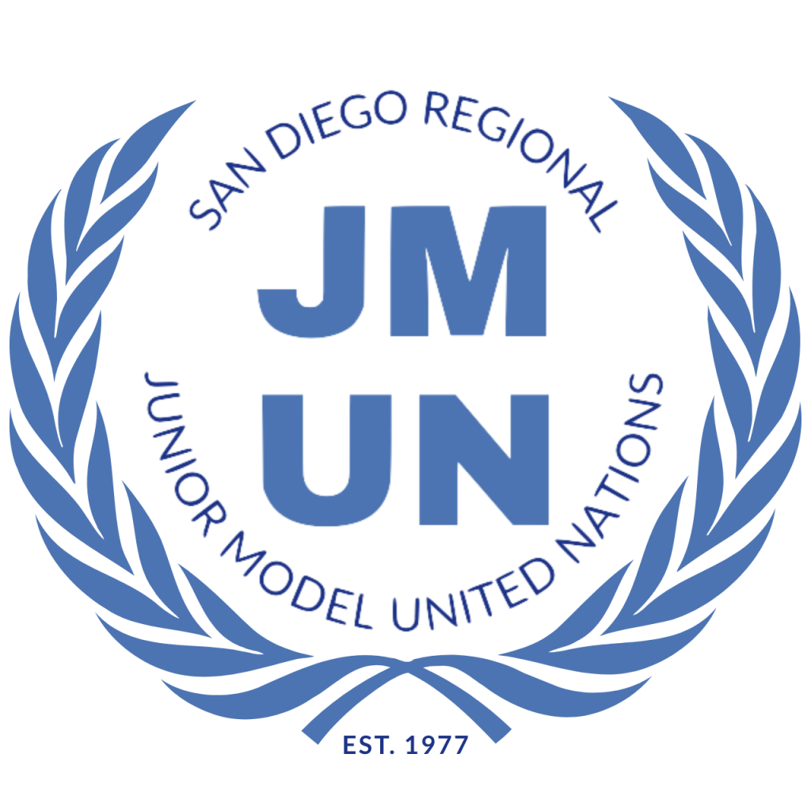

Jonathan Quitoriano
Mostly known as JQ
Student at UC Berkeley
Skills
-
‘E’ rated Varsity fencer for 7 years, competed at the national level 3 years in a row
-
Spanish speaker - 5 years of Spanish education
-
Clarinet player with 6 years of experience
-
Proficiency with the programmer’s mindset - ability to logically tackle problems
-
Intermediate coding ability in Java and Python
-
Currently learning Full-Stack Web Development with HTML, CSS, and JS
Experience
Jewish Family Services - Volunteer
-
Worked at organizing warehouse food donations, packaging delivery bags,
and finally delivering food to homebound seniors during the pandemic
-
Worked at JFS migrant shelter for immigrants awaiting asylum,
served a variety of cultures and families

San Diego Regional Junior Model United Nations (SDRJMUN)
Page for Economic and Social Council
-
Largest running Model United Nations Conference west of the Mississippi
-
Evaluated Position Papers, Resolutions, and Amendments of Delegates
-
Worked to ensure logistical smoothness for the Economic and Social Council
San Diego Regional Junior Model United Nations (SDRJMUN)
Head Chair for Economic and Social Council
-
Managed the entirety of the Economic and Social Council
-
Wrote background guides, evaluated position papers, resolutions, and compiled the agenda for the conference
-
During conference, managed flow of debate, ensured delegate participation, and adjudicated discussion
-
Eventually determined award-winners and presented awards to delegates
Awards and Honors
-
7th place medal at RJCC of the Rockies Div II Men's Epee event for fencing (2022)
-
1st place at Junior Olympics Qualifiers for the San Diego region in Cadet Men’s Epee (2021)
-
San Diego County Regional Science Olympiad
-
Placed Top 25 in Experimental Design (2020)
-
Placed Top 15 out of ~140 in Thermodynamics (2019)
-
Placed Top 20 out of ~140 in Write It, Do It (2019)
-
3rd place at Junior Olympics Qualifiers for the San Diego region in Cadet Men’s Epee (2019)
-
SDRJMUN - 4th Committee Gavel Award - 2018, Highest award given in committee for exceptional insight, research, and discussion